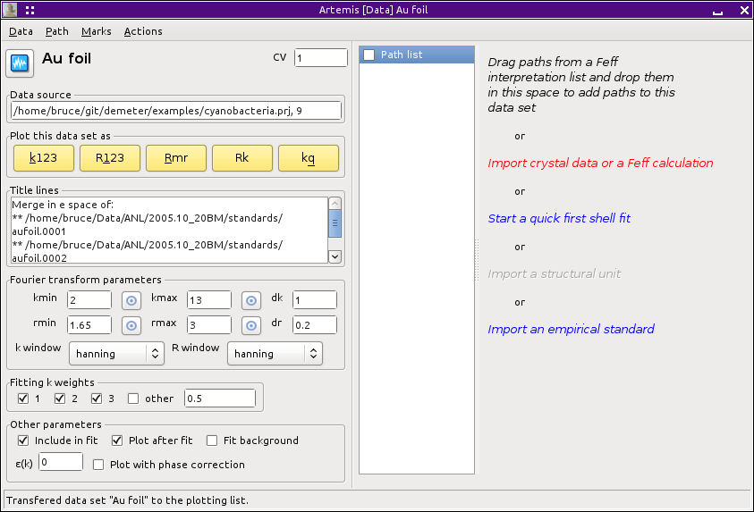
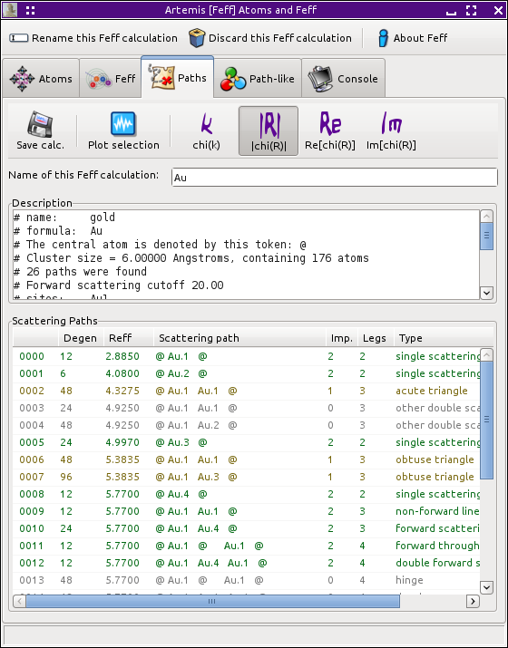
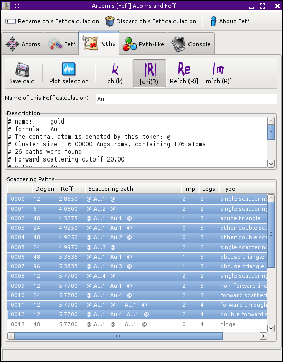

Home
Introduction
Starting Artemis
The Data window
The Atoms/Feff window
The Path page
- Setting math expressions
- Marking and plotting
The GDS window
Running a fit
The Log & Journal windows
The History window
Monitoring things
Managing preferences
In this chapter, the method for associating paths with data sets is explained. We will also see how to begin constructing a fitting model.
Shown below is the Data window, which we have already seen, with some data from a gold foil already imported. I have passed the cursor over the active text which says “Import crystal data or a Feff calculation”. Clicking will open the standard file selection dialog, prompting you for an atoms.inp, feff.inp or CIF file. The same thing can be done by clicking the “Add” button above the Feff list in the Main window, by selecting “Open project of data” from the File menu in the Main window, or by using the Control-o keyboaard shortcut.
From the file dialog, I select an atoms.inp file containing these crystal data:
title gold space f m 3 m a = 4.08 rmax = 6.00 core = Au1 atoms Au 0.00000 0.00000 0.00000 Au1This crystal data is entered in a FEFF window and posted to the screen.

Running ATOMS then FEFF results in this path list:
By clicking on path #0000 in the list then shift-clicking on path #0012, the first 13 paths are selected
Now click on any of the selected paths. While holding down the left mouse button, drag those paths over to the right side of the Data window and drop them by releasing the mouse button. This will place all 13 of those paths in the path list on the Data window containing the data on the gold foil.

At this point we can begin examining the paths by plotting them with the data. The path plotting tools are explained in a subsequent section.
Also at this point, we can begin creating a fitting model to fit the gold foil data using these paths from the FEFF calculation.